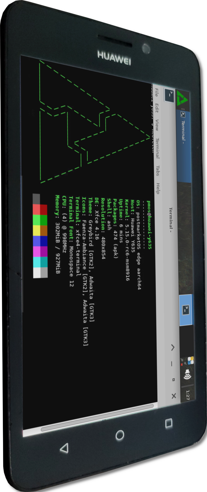

Huawei Y635 (huawei-y635)
Jump to navigation
Jump to search
|
 Huawei Y635 on mainline with Xfce | |
| Manufacturer | Huawei |
|---|---|
| Name | Y635 |
| Codename | huawei-y635 |
| Released | 2015 |
| Category | testing |
| Original software | Android |
| Original version | 4.4.4 (EMUI 3) |
| Hardware | |
| Chipset | Qualcomm Snapdragon 410 (MSM8916) |
| CPU | Quad-core 1.2 GHz Cortex-A53 |
| GPU | Adreno 306 |
| Display | 480 x 854 (IPS LCD, 5.0") |
| Storage | 4/8 GB |
| Memory | 1 GB |
| Architecture | aarch64 |
| Unixbench Whet/Dhry score | 915.7 |
{kind=link}
| USB Networking |
Works
|
|---|---|
| Flashing |
Works
|
| Touchscreen |
Works
|
| Display |
Works
|
| WiFi |
Works
|
| FDE |
Works
|
| Mainline |
Works
|
| Battery |
Works
|
| 3D Acceleration |
Works
|
| Audio |
Works
|
| Bluetooth |
Works
|
| Camera |
Broken
|
| GPS |
Broken
|
| Mobile data |
Broken
|
| SMS |
Broken
|
| Calls |
Broken
|
| USB OTG |
Broken
|
| NFC |
Unavailable
|
| Accelerometer |
Works
|
|---|---|
| Magnetometer |
Unavailable
|
| Ambient Light |
Works
|
| Proximity |
Works
|
| Hall Effect |
Unavailable
|
| Barometer |
Unavailable
|
| Power Sensor |
Unavailable
|
| Camera Flash | |
|---|---|
| Keyboard |
Unavailable
|
| Touchpad |
Unavailable
|
| USB-A |
Unavailable
|
| HDMI/DP |
Unavailable
|
| Ir TX |
Unavailable
|
| Ir RX | |
| Stylus | |
| Haptics | |
| Ethernet | |
| FOSS bootloader |
Works
|
|
This device is based on the Snapdragon 410. See the SoC page for common tips, guides and troubleshooting steps |
Contents
Contributors
Maintainer(s)
Users owning this device
- Ungeskriptet (Notes: Secure boot off; First device I ever mainlined)
How to enter flash mode
- Fastboot: Power on the device with both Power and Volume Down buttons while connected to a PC with a USB cable.
- Recovery: Power on the device with both Power and Volume Up buttons.
- lk2nd Fastboot: Power on the device. After it vibrates, hold Volume Down.
- lk2nd Recovery: Power on the device. After it vibrates, hold Volume Up.
EDL mode
To enter the EDL mode, these two points must be shorted while powering it on. If lsusb -d 05c6:9008 shows you a device, you can let go of the short.
{kind=link}
Preparation
Follow the preparation guide for the Huawei Ascend G7 until the Flashing new firmware part (Resize the tz partition and flash custom hyp and tz).
| Note: If your bootloader is already unlocked, it's possible to flash those partitions with lk2nd/TWRP. |
Flashing custom bootloader
This is necessary, since Huawei's bootloader can't load 64-bit kernels at all. This will also "unlock" the bootloader by using a different one that's bundled into qhypstub.
- Build lk1st (Check the README.md for requirements.)
$ git clone https://github.com/msm8916-mainline/lk2nd && cd lk2nd $ make TOOLCHAIN_PREFIX=arm-none-eabi- lk1st-msm8916 LK1ST_PANEL=boe_otm8019a_5p0_fwvga_video LK1ST_DTB=msm8916-huawei-y635-l01
- Build qhypstub with bundled lk1st
$ git clone -b bundle-aboot https://github.com/msm8916-mainline/qhypstub.git $ cd qhypstub $ git clone https://github.com/msm8916-mainline/qtestsign.git $ make CROSS_COMPILE=aarch64-linux-gnu- BUNDLE_ABOOT=../lk2nd/build-lk1st-msm8916/lk.bin qhypstub-test-signed.mbn
- Download and Install the EDL tool (follow the instructions on the GitHub page to install it) together with the required loader
- Boot into EDL mode
- Optionally backup all partitions except
userdatafrom the phone$ ./edl --memory=emmc --loader=linux-board-support-package-r1034.2.1/loaders/prog_emmc_firehose_8916.mbn rl backup --skip=userdata --genxml
- Flash qhypstub to the
hyppartition$ ./edl --memory=emmc --loader=linux-board-support-package-r1034.2.1/loaders/prog_emmc_firehose_8916.mbn w hyp ../qhypstub/qhypstub-test-signed.mbn
- Reboot the phone:
./edl reset
| Note: If you see Tux after it reboots, you have the new bootloader! |
Installation
| Note: Both Linux and lk1st only support the boe-otm8019a panel. |
- Install lk1st (alternative bootloader that provides a standard fastboot interface and allows booting 64-bit kernels)
- Follow Qualcomm Snapdragon 410/412 (MSM8916)#Installation.
lk2nd
| Note: Not really needed anymore, since we already have lk2nd as our primary bootloader (lk1st). |
The phone does not boot the default lk2nd image found on GitHub. In order to get a working image, lk2nd needs to be compiled manually. Check the README.md for requirements.
$ git clone https://github.com/msm8916-mainline/lk2nd && cd lk2nd
$ sed -i '/$(LOCAL_DIR)\/msm8916-mtp.dtb \\/d' dts/msm8916/rules.mk
$ make TOOLCHAIN_PREFIX=arm-none-eabi- lk2nd-msm8916
$ fastboot flash boot build-lk2nd-msm8916/lk2nd.img
Hardware status
| Component | Model | Status | Notes |
|---|---|---|---|
| MicroUSB | USB 2.0 | Y | Working only in peripheral mode |
| eMMC | Toshiba 008GE0 | Y | |
| Charging | PM8916 | Y | Uses PM8916 for charging |
| Volume/Power/Home keys | GPIO | Y | |
| Touchscreen | MStar msg2138 | Y | |
| Capacitive keys | Part of MStar msg2138 Touchscreen | Y | |
| Accelerometer | STMicroelectronics lis3dh | Y | |
| Light and proximity sensor | Avago apds9930 | Y | |
| Display | boe-otm8019a, cmi-ili9806e or tianma-otm8019a | Y | |
| Audio | PM8916 | Y | Headphone button detection works partially |
| GPU | Adreno 306 | Y | |
| Wi-Fi/Bluetooth | Qualcomm Atheros Prima (WCN3620) | Y | |
| LED Flash | Texas Instruments LM3642 | N | Driver available in mainline |
| GPS | ? | N | |
| Front camera | ? | N | |
| Main camera | ? | N |